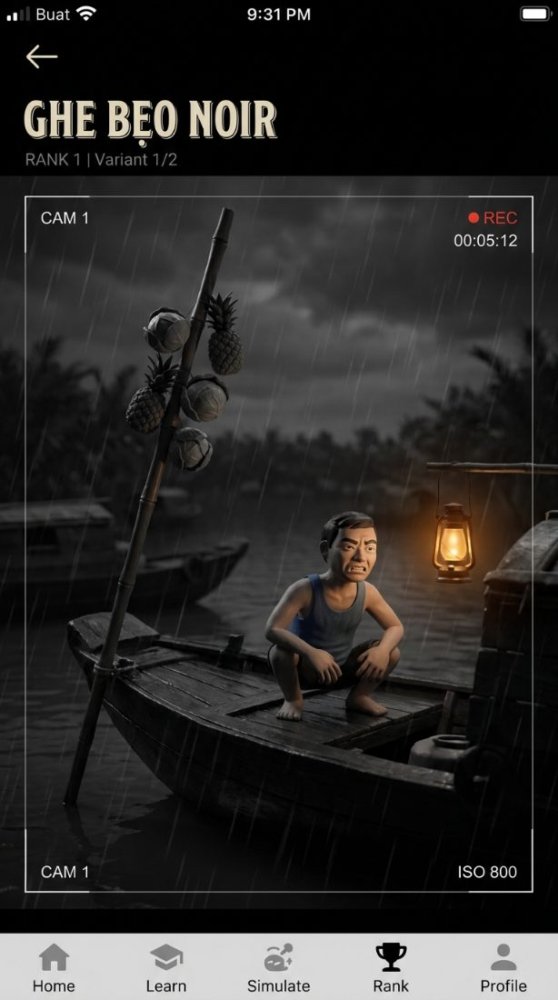
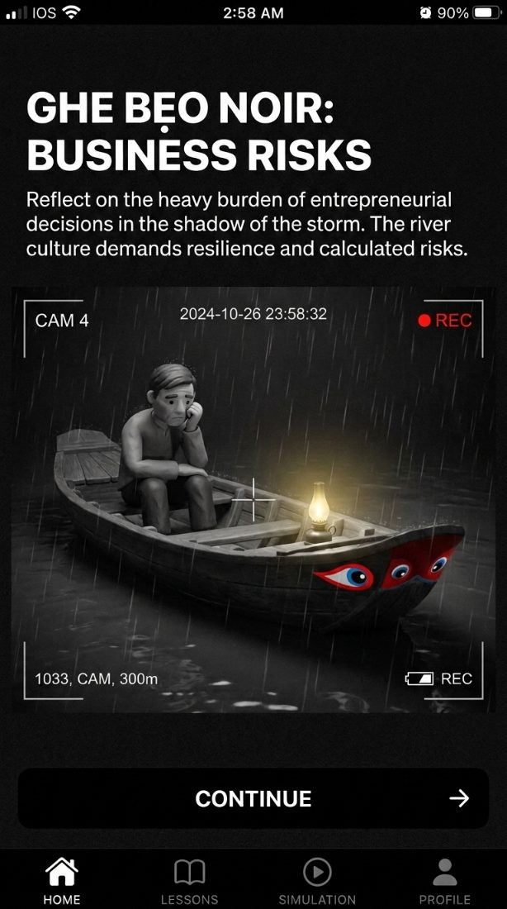
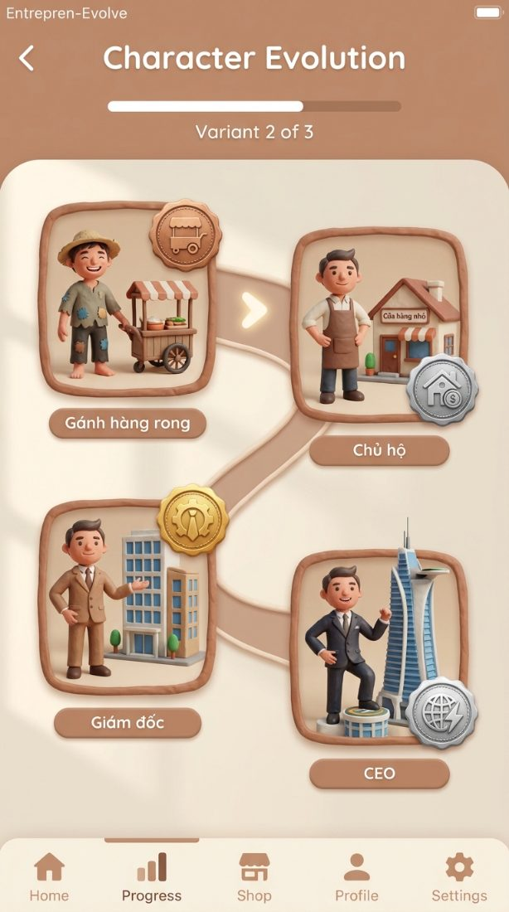
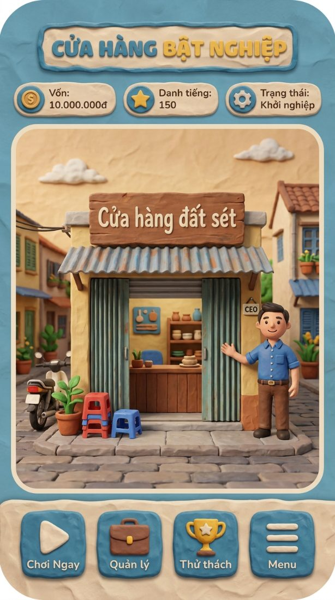
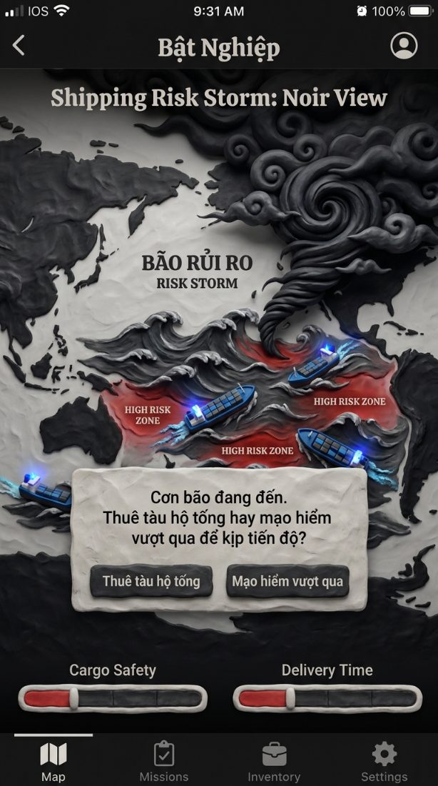

Hình dung
Ba bậc, kể bằng hình
Từ ghe hàng bông trên chợ nổi đến hộ chiếu thương hiệu ra thế giới — đây là hướng hình ảnh của hệ sinh thái, dựng bằng ngôn ngữ đất sét thủ công. Mỗi bậc giữ một tín hiệu bản địa riêng.
Bậc 1 · Bến Phù Sa
Hai tín hiệu chỉ đồng bằng mới có
Noir đen trắng, nhưng chừa lại hai màu có nghĩa: đỏ cho đôi mắt ghe, vàng cho đèn dầu. Và cây bẹo — cột tre cắm mũi ghe treo nông sản — là cách ghe hàng bông rao hàng, cũng là bài học đầu tiên của người học.


Nhân vật
Người chơi thấy mình lên bậc
Cùng một nhân vật đất sét, thăng tiến qua bốn bậc — và phù hiệu đổi ngay trên ngực áo, không cần bảng số.

Bậc 2a · Phố thị
Từ ghe lên cửa hàng
Bước vào BizOn Bật Nghiệp: mở cửa hàng trong bối cảnh phố thị Việt Nam, quản lý vốn, danh tiếng và từng quyết định giá.

Bậc 2b · Cửa khẩu → Hộ chiếu Thương hiệu
Ra thế giới bằng những quyết định đánh đổi
Đưa doanh nghiệp qua biên giới: chọn thị trường, cân rủi ro. Động từ lõi là đánh đổi — an toàn hàng hoá hay kịp tiến độ — chứ không phải chinh phục.

Xương sống
Đẹp, nhưng luôn là mô phỏng ra quyết định
Giữ đất sét, giữ nhân vật, giữ mọi con số có thật — thị phần, giá đối thủ, dòng tiền, rủi ro. Nhưng động từ lõi của mọi màn hình luôn là quyết định và đánh đổi, không phải chiếm hay thống trị. Đó là ranh giới giữa một công cụ dạy học và một game giải trí gắn nhãn giáo dục.
Tiếp theo